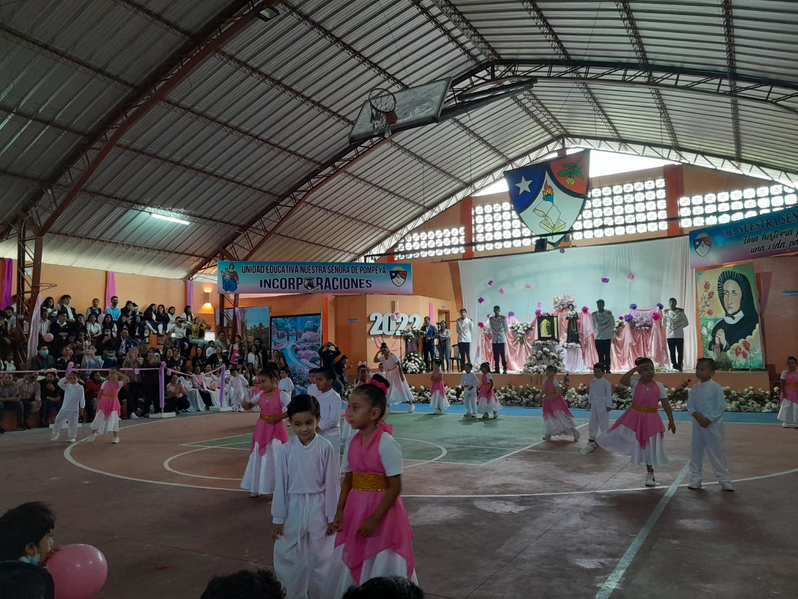
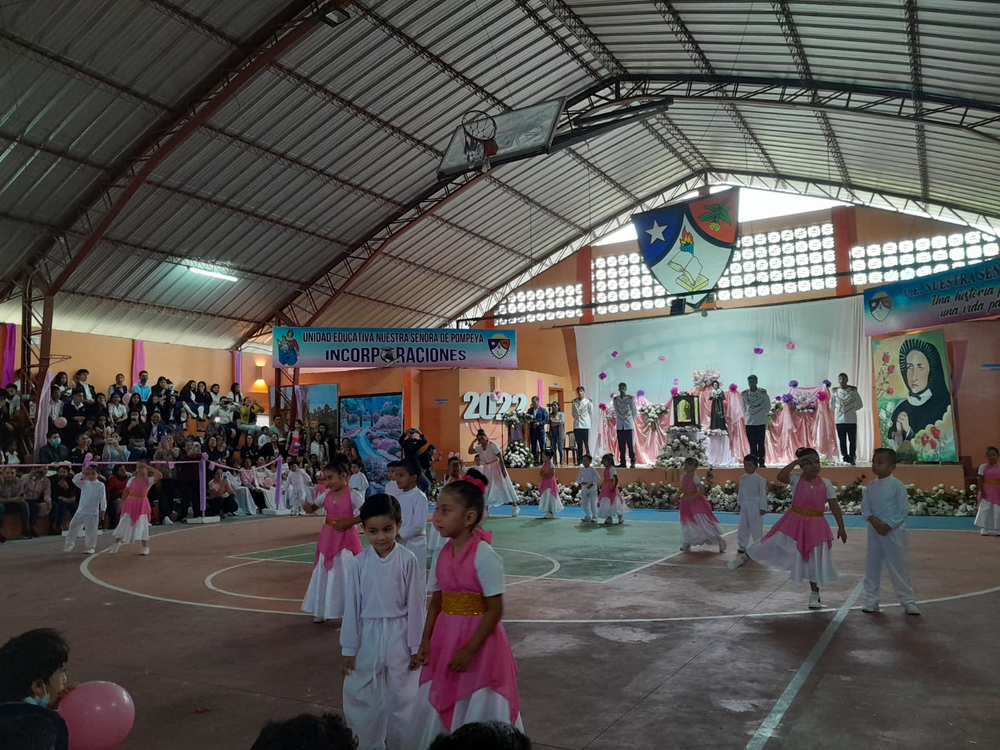
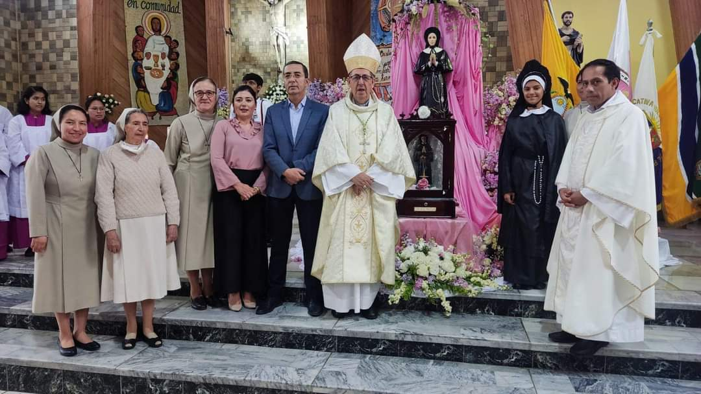
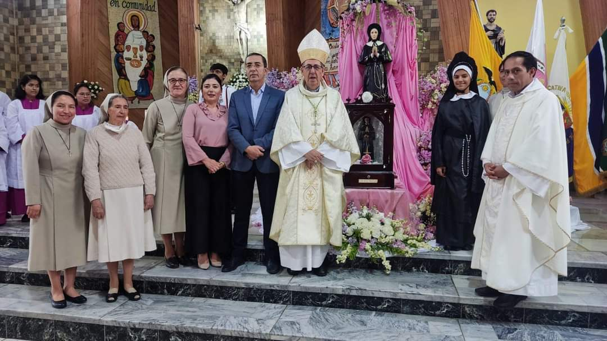
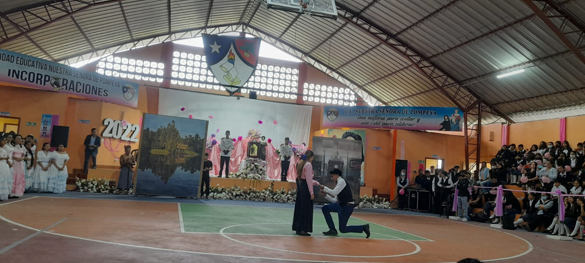
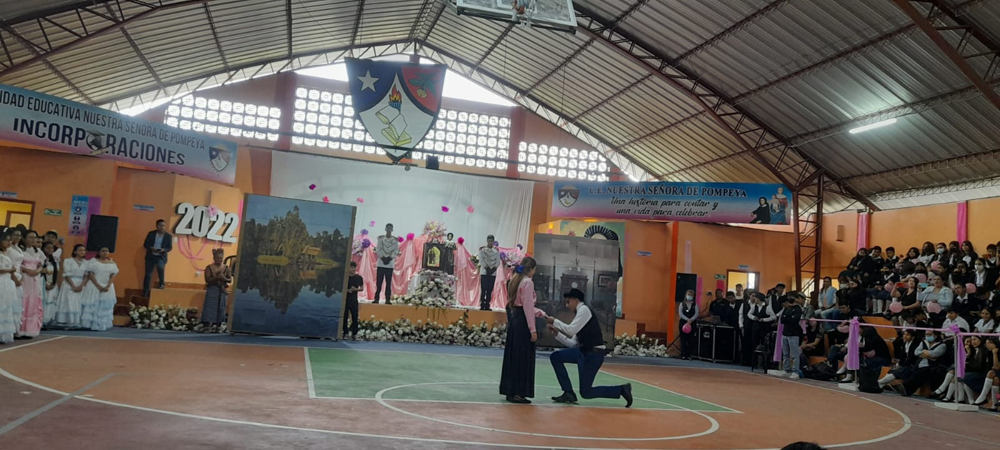

Visita de las reliquias de Madre Mercedes de Jesús Molina a la cuidad del Puyo y a la Unidad Educativa Nuestra Señora de Pompeya con motivo de los 150 años de la Fundación del Instituto Santa Mariana de Jesús. Mercedes de Jesús Molina fue proclamada beata por San Juan Pablo II durante su visita pastoral a Ecuador, en Guayaquil, el 1 de febrero de 1985. En aquella ocasión, el Santo Padre fijó su memoria litúrgica el 12 de junio. La Conferencia Episcopal de Ecuador, el 24 de abril de 2015, durante la 137 Asamblea Plenaria de los Obispos, ha declarado a la beata Mercedes de Jesús Molina materna patrona de los misioneros ecuatorianos “ad gentes”. Bienvenida madre Mercedes de Jesús Molina a la Unidad Educativa Nuestra Señora de Pompeya, regentada por las hermanas Marianitas. Oremos por su pronta canonización.
Galería de imágenes
 



 


 
